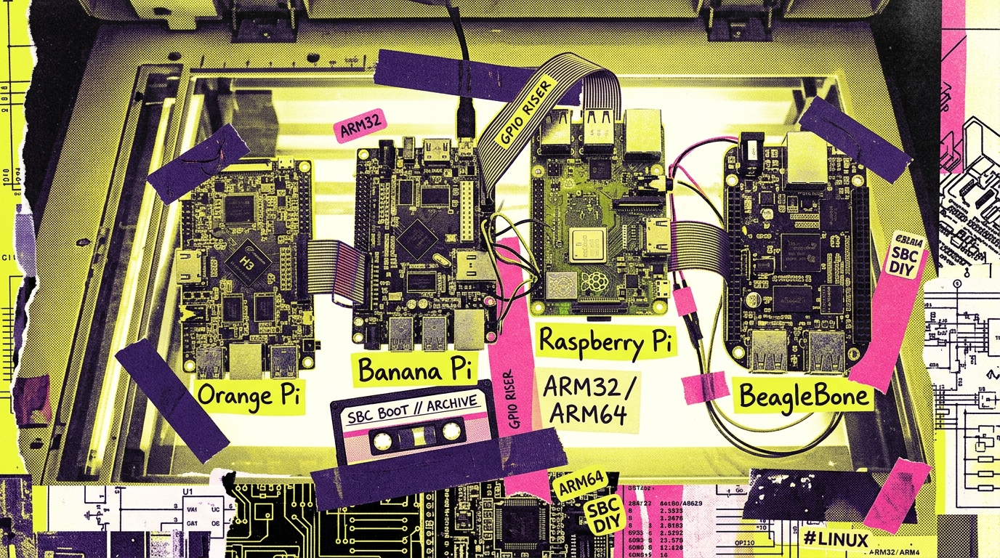
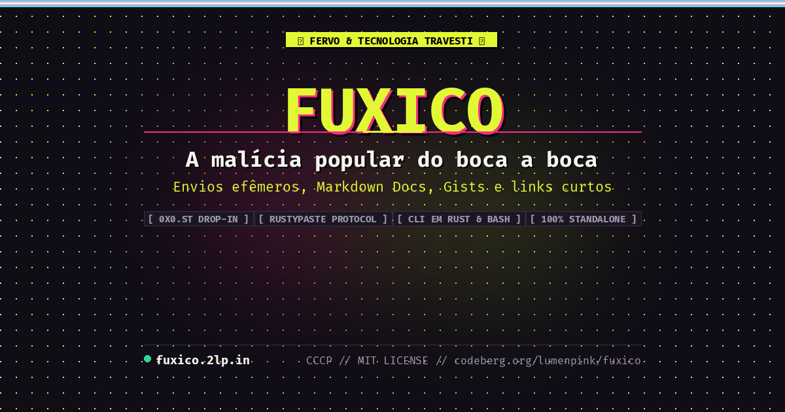
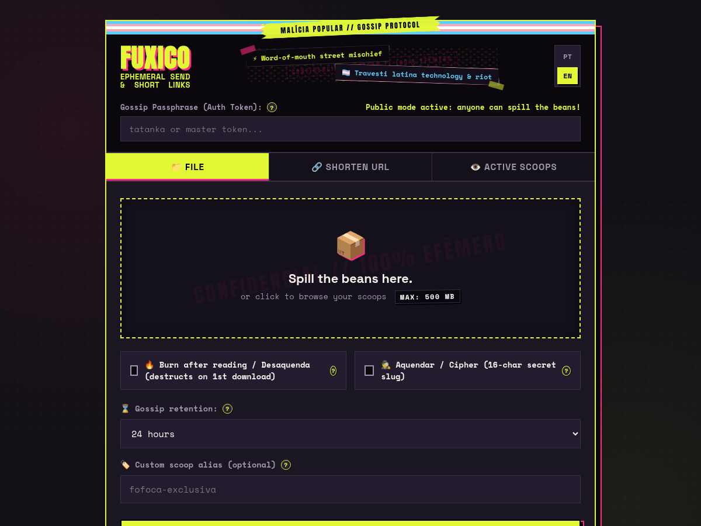
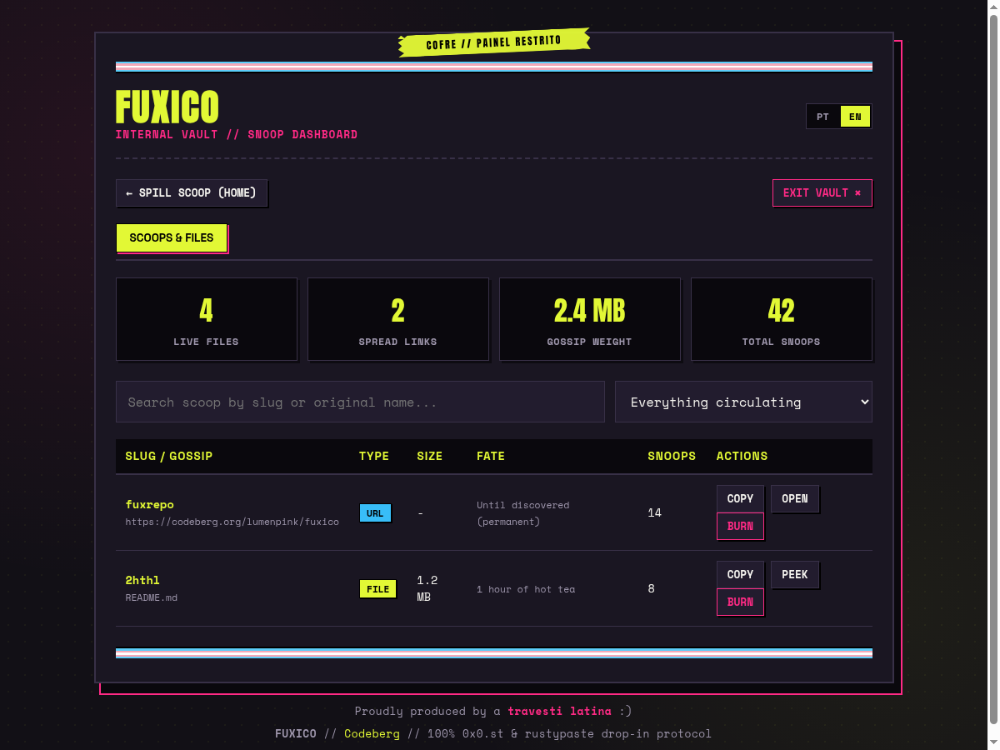
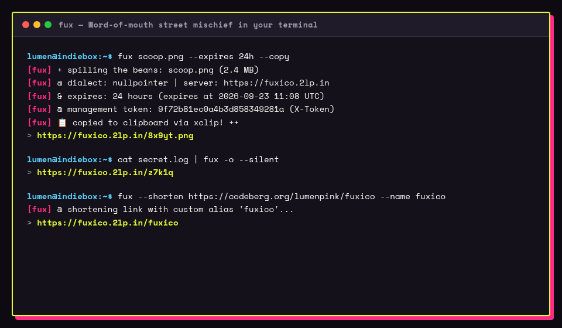

FUXICO
A malícia popular do boca a boca — Central de Documentação & Distribuição Estática
🎨 1. Colagens Zine & Arte Risográfica
Artes concebidas na estética independente de zine, com recortes Xerox, retículas de meio-tom (halftone), lambe-lambes de rua, fita adesiva amarela e a faixa do orgulho trans.

Zine Hero Banner
Colagem de alto contraste com colagens de jornais punk, spray rosa elétrico, fitas trans e o lema "SOLTA O VERBO".

Orange, Banana & Pi no Scanner
Placas SBCs escaneadas diretamente no vidro da fotocopiadora com etiquetas, cabos flat, fitas cassete e esquemas de circuitos.

Tecnologia Travesti Latina
Arte de manifesto hacker e contracultura celebrando termos autênticos do Pajubá (Aquendar, Desaquendar, Bafão) e monitor CRT.

Card OpenGraph & Poster Oficial
Banner oficial 1200x630 com Safe Zone 4:3 centralizada, fita adesiva, faixa trans e tipografia Anton de alto contraste.
📸 2. Prints Reais da Interface & Terminal (PT-BR & EN)
Capturas pixel-perfect da aplicação Fuxico rodando localmente, localizadas entre Português (com Pajubá) e Inglês internacional.

Dropzone & Envio Efêmero
Interface zine com vocabulário pajubá (bafão, queima-de-arquivo, aquendar), fitas adesivas e slug cifrado.

Dropzone & Ephemeral Share
International interface with standard terminology, oneshot expiration, custom slug, and trans pride ribbon.

Painel de Gestão (Pajubá)
Painel com contadores de fofocas no ar, volume total em MB, cliques e ações imediatas com X-Token.

Management Dashboard
Authenticated file manager showing active items, total storage volume, view counts, and quick management actions.

fux em Ação no Terminal
Demonstração com flags em pajubá (--caduca, --queima, --copia), deboche no stderr e URL limpa no stdout.

fux Terminal CLI (EN)
CLI execution with standard flags (-e 24h, -c), spilling the beans to stderr and clean URL output to stdout.
🍓 3. Tabela Didática de Hardware & Clones SBCs
Para acabar com a clássica confusão de arquiteturas, esta tabela estará disponível diretamente na página de downloads:
| Arquitetura | Binário Standalone Direto | Placas & Clones Cobertos (SBCs) |
|---|---|---|
| Linux ARMv7 32-bit armhf |
fux-linux-armv7 |
Orange Pi: Zero, One, Lite, PC, PC Plus, 2G-IOT (Allwinner H2+/H3) Banana Pi: M2 Berry, M2+, M2 Magic, M2 Ultra Raspberry Pi: 2, 3, 4 (rodando SO 32-bit) Outros: NanoPi NEO, NanoPi Air, BeagleBone Black, Cubieboard |
| Linux ARM64 64-bit aarch64 |
fux-linux-aarch64 |
Orange Pi: 5, 5 Plus, 3B, Zero 2, Zero 3 Banana Pi: BPI-M5, BPI-M4 Zero, BPI-R3 Raspberry Pi: 3, 4, 5, Zero 2 W (rodando SO 64-bit) Outros: Rock Pi 4, Pine64, Odroid C4/N2, Servidores ARM (Ampere, Graviton) |
| Linux ARMv6 32-bit legadão |
fux-linux-armv6 |
Raspberry Pi: 1 Modelo A/B/B+, Raspberry Pi Zero v1.x e Zero W Outros: Pogoplug clássico |
| Linux x86_64 executável standalone |
fux-linux-x86_64 | PCs Intel/AMD 64-bit, Notebooks, Servidores VPS, Mini PCs (NUC, Beelink), Alpine, Debian, Arch, Docker |
| Windows 64-bit x86_64 |
fux-windows-x86_64.exe | Windows 10, Windows 11, Windows Server 64-bit |
| Shell Universal POSIX / Bash |
fux |
Qualquer sistema Unix com curl (Linux, macOS, FreeBSD, OpenBSD, Termux no Android, OpenWrt)
|
⚡ 4. Instalador Direto em 1 Linha
Sem dependências complexas — o script detecta a CPU e o SO e entrega o executável pronto:
[fux-installer] Baixando binário standalone direto: fux-linux-armv7...
[fux-installer] Validando checksum SHA-256... OK!
[fux-installer] Instalado com sucesso em ~/.local/bin/fux ✨